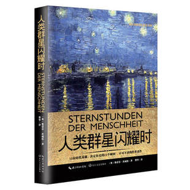
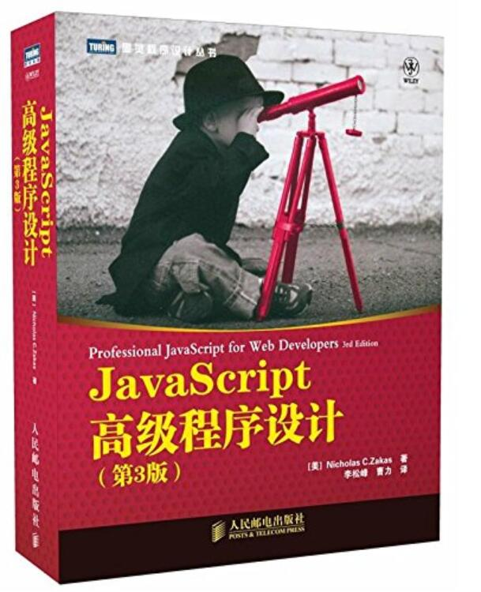
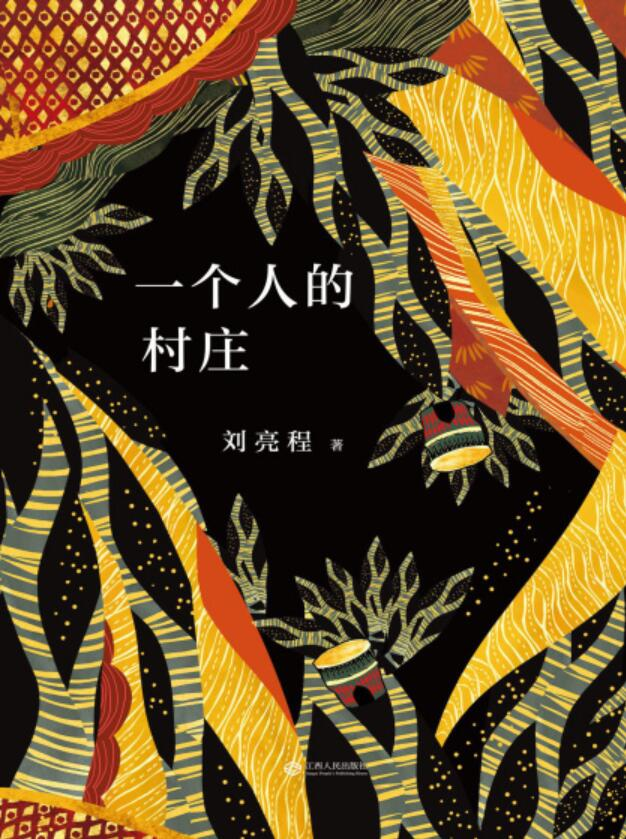

小站优选
 |
来自 外国文学 |
| 《人类群星闪耀时》的14个历史时刻 |

没有一个艺术家能在全天二十四小时始终保持不停的艺术创作，所有那些最具特色、最有生命力的成功之作永远只产生在难得而又短暂的灵感迸发之时。历史亦是如此，虽然我们称颂它为一切时代最伟大的诗人和演员，然而它也绝非一个毫不懈怠的创造者。歌德曾怀着敬意把历史称为“上帝的神秘作坊”，但在这作坊里所发生的，却也是数不清的寻常琐事，...显示全部
 |
来自 计算机 |
| 《JavaScript高级程序设计（第3版）》 |

作为JavaScript技术经典名著，《JavaScript高 级程序设计（第3版）》承继了之前版本全面深入、贴近实战的特点，在详细讲解了JavaScript语言的核心之后，条分缕析地为读者展示了现有规范及实现为开发Web应用提供的各种支持和特性。...显示全部
 |
来自 文学 |
| 《夜莺》[美] |
In love we find out who we want to be.In war we find out who we are. 法国，1939。 妹妹伊莎贝尔，叛逆的18岁少女。因为爱人盖坦一句“我要你和我一起去战斗”，她便用了一生去追随。她一直活跃在对敌斗争的前线，以“夜莺”为代号营救了许多飞行员，光芒璀璨
...显示全部
|  | 来自 中国文学 |
| 《一个人的村庄（精制多看版）》刘亮程 |
一条狗能活到老，真是件不容易的事。太厉害不行，太懦弱不行，不解人意、善解人意了均不行。总之，稍一马虎便会被人剥了皮炖了肉。狗本是看家守院的，更多时候却连自己都看守不住。 活到一把子年纪，狗命便相对安全了，倒不是狗活出了什么经验。尽管一条老狗的见识，肯定会让一个走遍天下的人吃惊。狗却不会像人，年轻时咬出点名气，老了便可坐 ...显示全部
 |
来自 短篇小说 |
| 《欧·亨利短篇小说选（精制多看版）》[美]欧·亨利 |
本书选收欧·亨利*秀的短篇小说代表作，其中有些已成为世界短篇小说的经典，如《麦琪的礼物》《警察和赞美诗》《后的常春藤叶》《供应家具的房间》等。这些作品脍炙人口，流传不衰。 欧·亨利是美国杰出的小说家，他以新颖的构思、诙谐的语言、悬念突变的手法表现了二十世纪初期的美国社会，开辟了美国式短篇小说的途径。他的作品富于生活情趣 ...显示全部